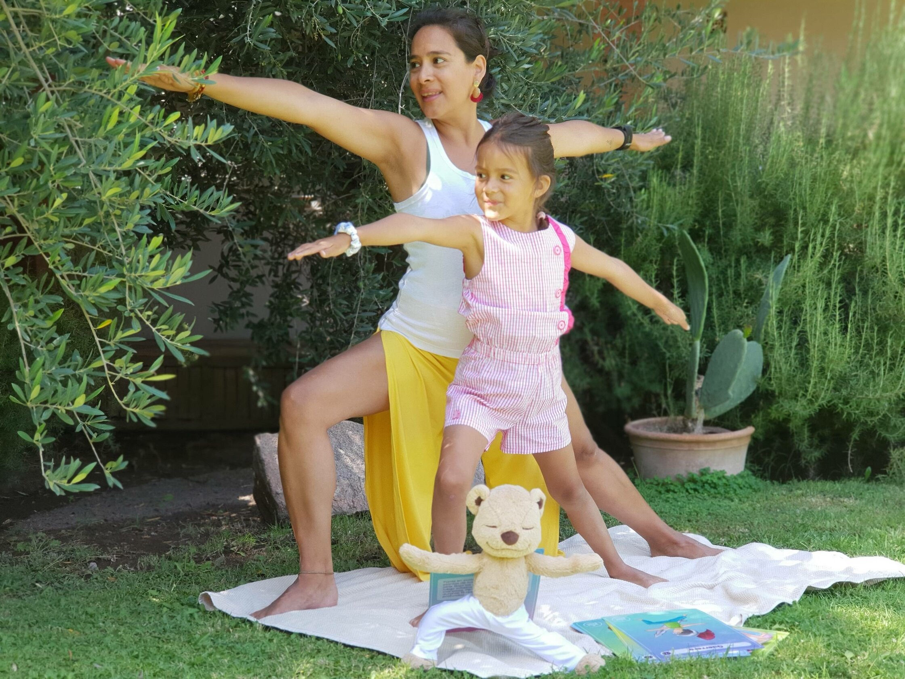

En la actualidad, vivimos en un mundo que nos bombardea constantemente con imágenes e información que muestra un estilo de vida y una apariencia con paradigmas estéticos que no se ajustan a la forma como no vemos y que puede resultar muy difícil de seguir, y esto trae como consecuencia que nos sintamos mal con nosotros mismos, lo cual puede traer como consecuencias trastornos de la alimentación, depresiones y muchos otros problemas; sin embargo, para nuestra tranquilidad, existen herramientas que nos pueden ayudar a luchar contra esto y es el Yoga.
Uno de los mayores beneficios que trae el Yoga es que, a través de ciertos ejercicios y de la respiración, contribuye a nuestro bienestar, tanto externo como interno, porque contribuye a adquirir fuerza, flexibilidad y equilibrio, además de que nos conecta con nuestro ser más profundo.
Si lo que necesitas es reforzar tu autoestima y confianza, aquí te mostramos 5 ejercicios de Yoga que te ayudarán a conseguirlo:
Tadasana
Esta postura yogui, también conocida como postura de la montaña, tiene grandes efectos psicológicos positivos y ayuda a sentir el suelo bajos tus pies. Otros aportes que te darán para tu estado físico son:
- Abre tu pecho y mejora tu respiración.
- Optimiza tu circulación sanguínea.
- Ayuda a corregir tu postura.
Vrkasana
El Vrkasana o postura del árbol te permite enraizarte y mantener los pies sobre la tierra, tal y como las raíces de los árboles; lo cual te dará la fuerza que necesitas para aumentar tu confianza. Los beneficios físicos que te trae son:
- Fortalece tus piernas y glúteos.
- Tonifica tus músculos abdominales
- Mejora tu equilibrio
Virabhdrasana II
Este ejercicio yogui, llamado también postura del guerrero II, refuerza tu sentido de independencia porque fortalece tu capacidad de moverte por ti mismo, lo cual te dará más confianza. Los beneficios físicos que trae son:
- Fortalece los músculos de las piernas
- Abre tu pecho y tus caderas
- Mejora tu función digestiva
- Fortalece tus brazos.
Utthita Ardha Chandrasana
Es también conocida como postura de la media luna, y es la postura de Yoga más indicada para mejorar nuestro equilibrio, el cual es fundamental para nuestra salud mental y física; así como también, el practicar ejercicios y posturas que estimulen nuestro equilibrio nos permite encontrar mayor balance en varios aspectos de nuestras vidas como en la alimentación, las relaciones interpersonales y con nuestro propio cuerpo.
Entre los beneficios físicos que nos da, encontramos:
- Da energía y mejora tu equilibrio.
- Ayuda a las mujeres con menstruaciones muy fuertes.
- Fortalece tus piernas.
Prasarita Padottanasana
Llamada también flexión hacia delante con las piernas separadas. Esta postura de Yoga es excelente para calmar los nervios y la mente; además de que ayuda a combatir la depresión leve y estimula la introspección.
- Los beneficios físicos que te trae son:
- Aumenta tu flexibilidad en los músculos posteriores de las piernas.
- Alivia el dolor de cabeza.
Ten presente que el Yoga es una disciplina en la que, si bien trabajamos nuestro cuerpo, este debe ir en consonancia con nuestra mente; por eso, también es indispensable trabajar nuestros pensamientos, siguiendo principios de vida éticos y en pro del bien.